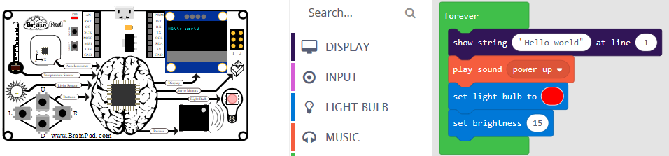

Start Making

To get started with the BrainPad you don't need to install any software. You don't even need a BrainPad -- just use the online simulator! Microsoft MakeCode makes it all possible.
Tip
The BrainPad can also be programmed in the same way professional developers do. Depending on your goals and skill level, you can Go Beyond Microsoft MakeCode and start coding using .NET and Visual Studio when you are ready.
Microsoft MakeCode
Microsoft MakeCode is a great way to learn programming. Microsoft MakeCode allows you to drag and drop blocks to create programs while seeing the results on a simulated BrainPad. Microsoft MakeCode also has a JavaScript program editor. When you change your block program Microsoft MakeCode changes your text (JavaScipt) program for you. Changes made to the text program will automatically show up as changes to your block program.
When you get your program working on the simulator, you can just drag and drop it to run it on the real BrainPad!
Tip
The BrainPad has a simulator in Microsoft MakeCode. This means you can start making even if you do not have a BrainPad yet.
A Quick Test!
Run this quick test to verify your BrainPad is ready:
- Plug your BrainPad into a Windows computer using a micro USB cable. The red power (PWR) LED on the BrainPad should light up.
- Press and hold the reset button for about three seconds. The BrainPad Light Bulb should turn green and the computer should find a new drive and open a window for it.
- Download this file.
- When the download is complete, select
Show in folderorSaveandOpen folder(depending on your browser). - Copy the downloaded file into the BrainPad folder from step 2 (or drag and drop it into the BrainPad folder).
- The green LED will flash a little then the board will reset.
The display should show the text "Your BrainPad is ready to go!" and the Light Bulb should be lit blue something like the image below.

If any of the steps above failed, visit this Troubleshooting Guide
You Are Ready
The BrainPad's Microsoft MakeCode section has instructions, tutorials, and sample programs:
makecode.brainpad.com
You are on the documentation website for the BrainPad. The main website is found at www.brainpad.com